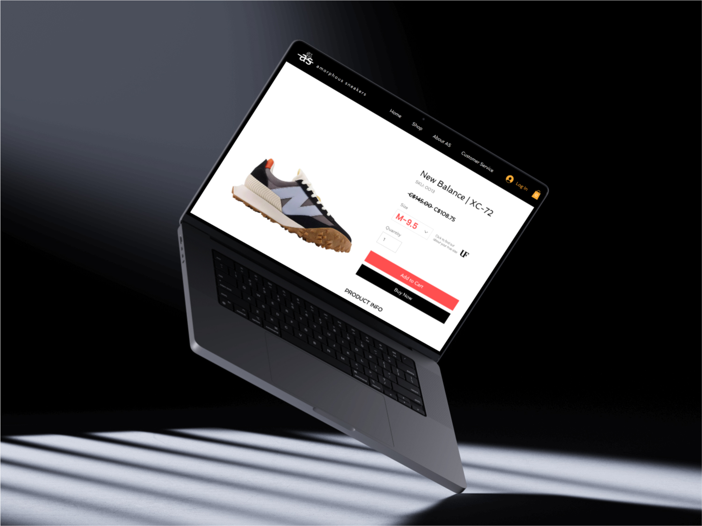

UniverisoleFit: Start Up
Universole Fit
Visit PrototypeWhat started out as a volunteer UX design position in collaboration with BrainStation and The Forge, a start-up incubator business, turned to a short-term contract project.
UniversoleFit: An app that helps people find the exact right size fitting shoe. When you go to a shoe store, you may think you're a size 9 but, you might be a size 9.5 or a size 8.5 depending on the brand. Universole Fit has developed an app that uses machine vision and the users phone camera to determine the exact right size, then it matches the user to the right sized shoe available in their database of shoes with many brands/models represented. To build the database, Universole Fit has used cat-scan technology to get detailed 3D measurements down to a fraction of a millimeter of the inside of each shoe. They are looking for assistance improving their user experience and interface design especially for the foot-scanning technology.
Project
Short-Term Contract
Timeline
Nov - Dec 2023
Tool(s)
Figma, Google Docs, OtterAi, Google Meets
My Role
User Experience Designer (Team of 3)
Premise
Founder Josh presented the current roadblock UniversoleFit is facing with their demo product, ShoeSzr. The product's flow isn't smooth or user-friendly enough for new users to easily adopt. My role in the project is to enhance the user flow of the existing product and explore potential solutions to reduce user errors.
Before
What we started with
[this project is still currently in the writing 2024.Feb.27]
After
What we started with
[this project is still currently in the writing 2024.Feb.27]
Prototype
- 